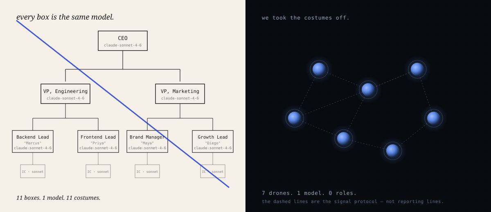

Multi-agent AI is cosplay. The Borg got it right. So did Ultron. So do bees and ants. Drone Graph is what an AI workforce looks like when you stop pretending it's a company — identical agents, one shared mind, no managers, no roles.

Mission Control — the dashboard for your swarm.
Watch any multi-agent demo. One agent is the CEO. One is the researcher. One is "Maya from marketing" — personalities, job titles, opinions about Q4 strategy. Underneath, they are the same model in three coats, and the costume costs you: each agent defends the role it was assigned, hallucinates work that fits, and shares nothing with the others but a chat log pretending to be memory.

A drone has no résumé, no job title, no career, no ego. It is spawned for a gap, pulls what it needs from the shared mind, closes the gap, and dissolves. The next gap spawns the next drone. The individuals are short-lived. The collective endures.
Coordination without managers. Every layer earns its place. If a box exists because it looks sophisticated, we delete it.
A single mission, three views. The orchestrator on the command line. The same run watched from Mission Control. The effects landing in the real world through the terminal — Stripe payments settle, Reddit comments post, grant forms get filed, code gets shipped.

1. Command line

2. Mission Control

3. Real-world effects
~9 minutes wall · $1.42 spend · 60 gap-finding cycles · packaged scenario, runs unmodified.
A drone wakes when a gap exists. It pulls the skills and tools it needs from the collective mind, acts through the terminal, deposits its findings, and dissolves. Every drone shares one system prompt. None of them has a name or a role. Coordination isn't managed, it's the signal protocol: check before installing a package, don't open a file another drone has open. Gap finding is itself a gap. There is no central planner.
Two of those preset gaps ship today (gap finding, alignment). The other two are designed.
Other agent stacks treat memory as one flat bucket — chat history, a folder of .md notes, a vector store, whatever. Drone Graph has one shared substrate that outlives every drone, every mission, every restart. Five kinds of content live in it, each with its own lifecycle.
Runnable procedures any drone can load, download from the internet, or author from scratch. A skill written by one drone belongs to every future drone. Accumulates monotonically.
Starts empty. Populated as drones install packages through the terminal. Tools unused within a window get uninstalled to save disk. Persistent with expiry.
Venv state, research notes, business progress, execution history. Loaded into memory only when needed, and summarized and compacted otherwise. Persistent, but not verbatim.
A drone is an executor, not a memory. Conflating the two is how every other agent stack hallucinates itself into incoherence.
A user submits a goal: Launch and operate a pharmaceutical company. Discover, develop, trial, and ship new, continually better drugs for Parkinson's. The swarm starts. It does not stop.
Gap finding cracks the goal: target validation, in-silico screening, preclinical work, trial design across phases, FDA filings, manufacturing, distribution, post-market surveillance. Branches deepen until leaves are executable. Every gap carries its own intent, criteria, tool loadout, and model tier.
For each leaf, an ephemeral drone wakes and acts through the terminal — the only real tool. CRO booking APIs place wet-lab orders. Banking rails wire payments to contract manufacturers. E-submission portals file INDs and NDAs. E-signature services close contracts. Binding-affinity results, supplier ledgers, regulatory drafts land back in the collective mind as findings; the drone dissolves. A skill for draft FDA pre-IND briefing gets written once and reused for every future drug.
Alignment compares every new finding against the root goal and flags drift the moment it appears. Memory management summarizes decade-old trial data so it stays useful but cheap. Gap finding keeps decomposing as the company grows from one drug to ten.
CROs run the assays. Contract manufacturers press the tablets. Hospitals enrol the trial. Regulators approve the filing. Pharmacies stock the bottle. Reimbursements and direct sales land in the corporate account the swarm controls; a treasury preset settles invoices, files taxes, routes surplus into the next indication. The user is pinged only for what the swarm can't do alone — wet-lab execution, IRB signatures, wire transfers above threshold. Everything digital is the hivemind's problem.
A pharmaceutical company with zero employees. The work organizes itself around the gaps; the collective mind remembers what the drones cannot.
No point rolling out a battle tank to buy milk.
Two foundational notes lay out the thinking under the system. Each opens in a new tab; the PDF is the same content compiled for offline reading.
MIT-licensed. Architecture notes, protocol specs, Mission Control UI, reference implementation — all public. Run it locally in one command: